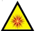

Trabajos con riesgo eléctrico en alta tensión:
Operaciones para la creación de la Zona de Trabajo en Descargos.
Si las operaciones de hacen sobre elementos NO protegidos.
Los elementos NO protegidos, tienen partes accesibles en tensión que crean zona de peligro y exponen al trabajador a los riesgos eléctricos de:
Descargas por contacto eléctrico en AT.
 Exposición al arco eléctrico en AT.